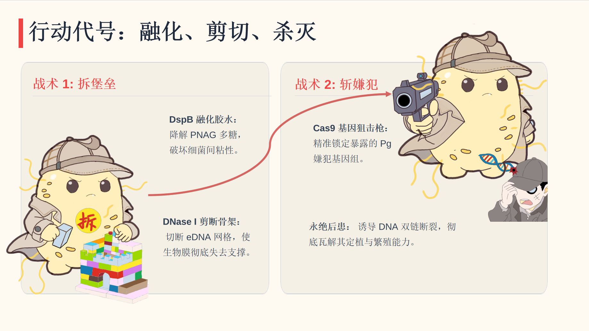
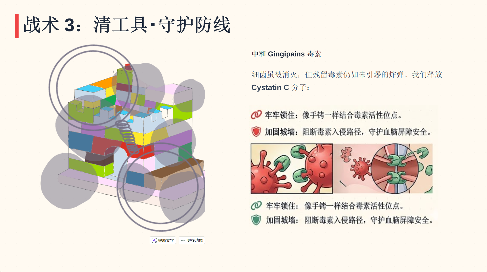

概述 (Overview)
工程化思维 (The Engineering Mindset)
合成生物学的核心在于将复杂的生命系统转化为可预测、可编程的工程模块。在 MediSyn 项目中，我们致力于解决一个看似遥远却紧密相连的医学难题：通过干预牙周炎来拦截阿尔茨海默病 (AD) 的发展。
基于"口-脑轴 (Oral-Brain Axis)"理论，我们锁定了头号嫌疑犯——牙龈卟啉单胞菌 (P. gingivalis)。为了彻底清除其构筑的生物膜堡垒，并中和其释放的神经毒素 (Gingipains)，我们严格遵循了 研究 (Research)、设计 (Design)、构建 (Build)、测试 (Test) 和 学习 (Learn) 的工程循环。我们的项目经历了四个关键的迭代周期，最终打造出了智能化的微型机器人——Agent EcN。本页面将完整记录我们的工程化旅程。
合成生物学的核心在于将复杂的生命系统转化为可预测、可编程的工程模块。在 MediSyn 项目中，我们致力于解决一个看似遥远却紧密相连的医学难题：通过干预牙周炎来拦截阿尔茨海默病 (AD) 的发展。
基于"口-脑轴 (Oral-Brain Axis)"理论，我们锁定了头号嫌疑犯——牙龈卟啉单胞菌 (P. gingivalis)。为了彻底清除其构筑的生物膜堡垒，并中和其释放的神经毒素 (Gingipains)，我们严格遵循了 研究 (Research)、设计 (Design)、构建 (Build)、测试 (Test) 和 学习 (Learn) 的工程循环。我们的项目经历了四个关键的迭代周期，最终打造出了智能化的微型机器人——Agent EcN。本页面将完整记录我们的工程化旅程。

图 A | 战术1、2、3：拆堡垒、斩嫌犯、清工具 总体概念图

图 B | 基因线路图 Gene Circuit